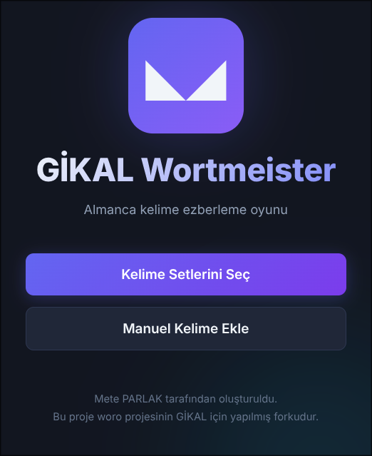

GİKAL Wortmeister

German vocabulary learning application - developed with Rust + egui/eframe.
Features
- Built-in word sets (Prepared, 9-10th grade)
- Interactive game mode
- Progress tracking (level system)
- Auto-save
- Built-in logo and resources
- Manual word addition (TXT import support)
- Random word selection
Technologies
- Rust - Programming language
- egui/eframe - GUI framework
- serde/serde_json - JSON parsing
- image - Visual management
- rfd - File dialog
Notes
- Words are embedded into binary at compile-time
- Progress is saved to user_progress.json file
- Words reaching level 5 are considered "memorized"